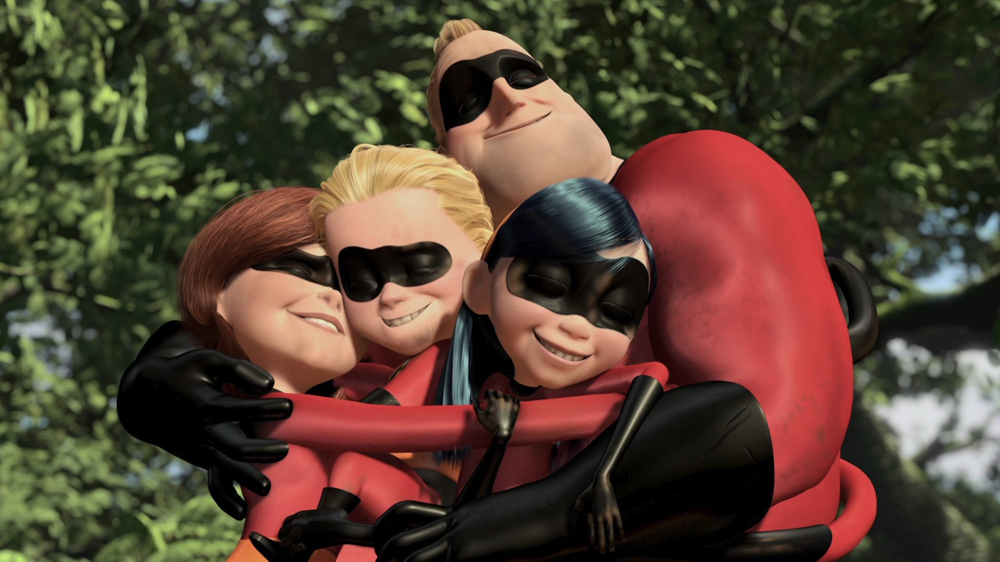
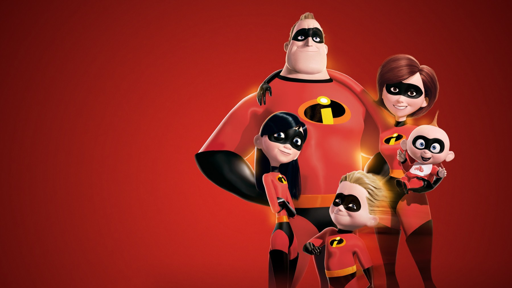
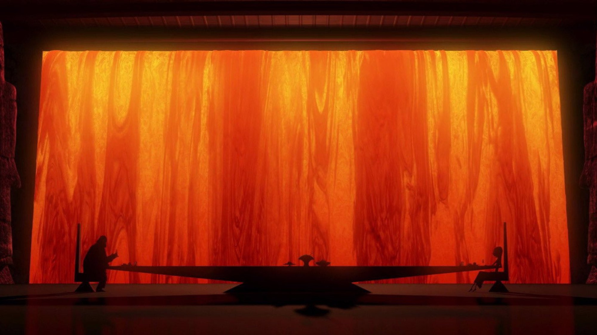

Gli Incredibili (2004): perfetto fino all'isola
Un padre stretto nel suo cubicolo e un mantello che uccide: il film Pixar del 2004 resta il miglior film di supereroi sul tempo che passa
Gli Incredibili è il miglior film sui supereroi perché non parla di salvare il mondo: racconta un uomo di mezza età che rimpiange l'unica cosa in cui era bravo. Lo rivediamo a ventidue anni dall'uscita e la tesi regge ancora, anzi è più forte, perché i supereroi ormai sono dappertutto e quasi nessuno ha il coraggio di farli annoiare e litigare in cucina.
Lo scrisse un regista appena messo da parte: il suo lavoro precedente, Il gigante di ferro, non aveva convinto al botteghino. Bird portò poi la sua idea di famiglia di supereroi alla Pixar, e lo studio che fino ad allora animava giocattoli e pesci si ritrovò con umani che non si sopportano.
Un eroe che fa il perito assicurativo
Quindici anni dopo il divieto di usare i superpoteri, Bob Parr lavora come perito in un'assicurazione, e di nascosto continua a fare il giustiziere. È il primo momento che ci resta addosso: mentre un rapinatore scappa sotto i suoi occhi, il capo, Gilbert Huph, gli impone di pensare ai clienti e di lasciar perdere. Bob lo scaraventa contro un muro e perde il posto. Ridiamo, ma la ferita è vera: l'uomo che poteva fermare i criminali non può nemmeno fermare un'ingiustizia in ufficio. Lo sappiamo tutti, cos'è un lavoro che ti rimpicciolisce.
In Italia Bob ha la voce di Adalberto Maria Merli ed Elastigirl quella di Laura Morante. Il doppiaggio, diretto da Carlo Valli, sceglie un'altra strada per il figlio: Dash diventa Flash, un soprannome che arriva subito all'orecchio di un bambino e conserva l'idea di velocità. Piccola scelta, ma dice che da noi i Parr non sono personaggi da catalogo.

La scena da ricordare: «niente mantelli»
Se dovessimo mostrare un solo minuto a chi non l'ha mai visto, sceglieremmo la visita da Edna Mode. La stilista minuscola, con il caschetto nero e gli occhiali tondi, rifiuta di disegnare un mantello e per spiegare perché proietta una carrellata di eroi morti: Dynaguy, Thunderhead, Stratogale, Meta-Man, Splashdown, ognuno ucciso dal proprio mantello. Il gioco comico regge benissimo. Il racconto prende in giro un secolo di costumi da fumetto con la logica di un perito assicurativo, la stessa del Bob che vediamo in ufficio poco prima.
Nell'originale c'è un dettaglio che cambia il modo di guardare la scena: la voce di Edna è quella di Brad Bird. Anche Lily Tomlin era stata presa in considerazione per il ruolo, ma alla fine la voce rimase quella di Bird, che aveva registrato le battute provvisorie per le tavole. Quel monologo sui mantelli è dunque il regista che, travestito da stilista, smonta con le sue mani un secolo di regole dei costumi da fumetto. In italiano Edna è Amanda Lear, che al tono comico preferisce una lettura più seducente e tagliente: un'altra Edna, non una copia. E la scena non è un riempitivo: lo capiamo solo alla fine, quando il cattivo Sindrome muore con il proprio mantello impigliato e la regola enunciata come battuta diventa una condanna.
Un film che doveva inventare gli umani
Era il primo film Pixar con protagonisti tutti umani, e i capelli lunghi di Violet furono uno dei problemi più ostici. Il risultato non cerca il realismo: le proporzioni sono caricaturali, da fumetto anni Sessanta, e il film regge molto meglio di tante prove di realismo di quegli anni. Lo stesso vale per la musica. Michael Giacchino registrò le partiture su nastro analogico per ottenere un suono da spionaggio alla John Barry, e ogni inseguimento sembra uscire da un vecchio 007 giocato in famiglia.

Il confronto che conta
Con Il gigante di ferro, Bird aveva già raccontato qualcuno che deve scegliere se essere un'arma o una persona. Qui ribalta il problema: i Parr sono persone costrette a smettere di essere un'arma. Qualcuno interpreta la storia come un manifesto di Ayn Rand sul talento che non va represso, e Bird rispose che l'analisi era sciocca quanto dire che Il gigante di ferro fosse di sinistra. Concordiamo: Gli Incredibili non tifa per i superuomini, ma per le persone che vogliono essere riconosciute per ciò che sanno fare, e alla fine vince quando i Parr scoprono di funzionare meglio insieme.
Rispetto alla concorrenza di allora, Cinefilos lo disse bene: la Pixar cerca la storia, mentre la DreamWorks risolve tutto con l'animale parlante che fa le facce buffe. Qui di animali non ce n'è. C'è una storia di famiglia che non chiede permesso.
Dove il film perde un colpo
La seconda metà ci convince di meno. Quando la famiglia arriva sull'isola di Sindrome, la commedia domestica, il vero motore dell'inizio, si fa da parte e lascia posto a un'azione efficiente ma meccanica. Il finale è spettacolare, con Bob che lancia la sua auto contro l'aereo del cattivo, ma è un'idea da blockbuster qualunque. Resta un solo momento dell'isola all'altezza dell'inizio: la fuga di Flash nella giungla, con le moto volanti dei sorveglianti alle calcagna e il bambino che scopre di poter correre sull'acqua. Lì l'invenzione ritorna, e proprio per questo si sente la mancanza del resto. La prima ora, intanto, aveva trovato gag che solo questo film poteva avere, dalla ramanzina di Huph alla carrellata dei mantelli.
I numeri, in un colpo solo
Il film uscì in Italia il 26 novembre 2004 e incassò 15,6 milioni di euro; nel mondo arrivò a circa 631,6 milioni di dollari, quarto incasso del 2004. Vinse due Oscar, miglior film d'animazione e miglior montaggio sonoro alla cerimonia del 2005, ed ebbe la candidatura per la sceneggiatura originale. A ottobre 2026 ha il 97% di recensioni positive su Rotten Tomatoes e 90 su 100 su Metacritic, e a gennaio 2026 lo ha scelto il National Film Registry degli Stati Uniti. Il seguito, Gli Incredibili 2, è del 15 giugno 2018; un terzo film è atteso per il 16 giugno 2028.
Dove vederlo e a chi lo consigliamo
A ottobre 2026 si trova in abbonamento su Disney Plus e a noleggio su Apple TV Store, Timvision, Rakuten TV e Amazon Video. Le piattaforme cambiano spesso catalogo: conviene controllare prima di decidere la serata.
Lo consigliamo a chi lo ricorda come un film per bambini: scoprirà un racconto sul lavoro, sul matrimonio e sulla paura di diventare normali. Lo consigliamo anche a chi è stufo dei supereroi, perché qui servono da pretesto per parlare d'altro. Meno a chi cerca solo scontri spettacolari. Resterà soddisfatto a metà.
Domande frequenti
Perché in italiano Dash si chiama Flash?
Il doppiaggio diretto da Carlo Valli cambia il nome del figlio di Bob: Flash conserva l'idea di velocità dell'originale. Il film uscì in Italia il 26 novembre 2004.
Chi doppia Edna Mode in italiano?
Amanda Lear. Nella versione originale la voce è quella dello stesso regista, Brad Bird, che interpretò il personaggio anche se per la parte era stata presa in considerazione Lily Tomlin.
Dove si può vedere in Italia?
A ottobre 2026, in abbonamento su Disney Plus e a noleggio su Apple TV Store, Timvision, Rakuten TV e Amazon Video.